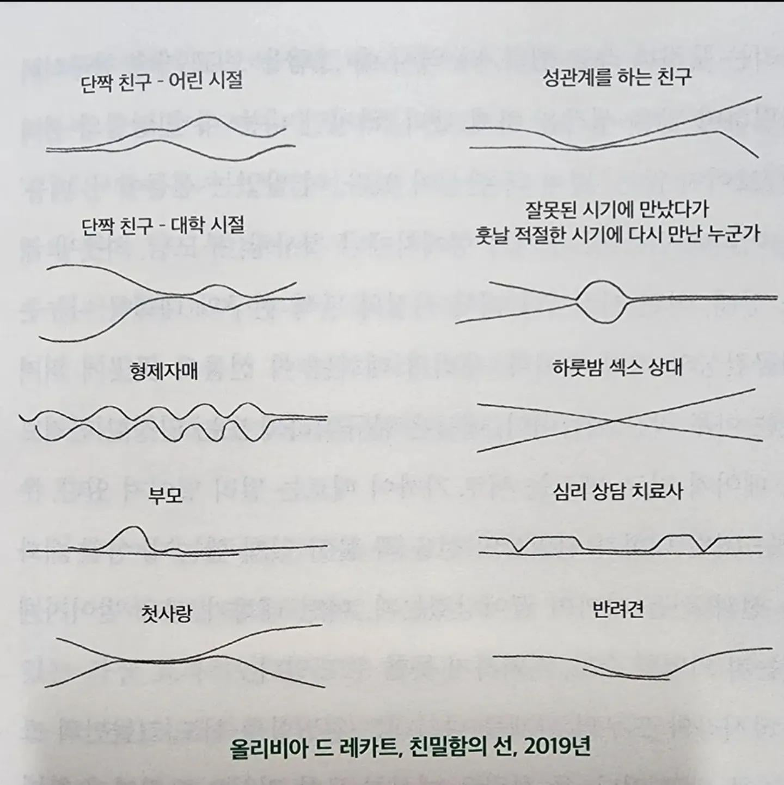

부모하고 반려견은 너무 짧아서 슬프다

부모하고 반려견은 너무 짧아서 슬프다
일단 닉을 보면 그래야 할것 같긴해
아 보추퍼리를 좋아한다는 거지?종류는 물좋아해
반려견하고 부모에서 머리가 띵해지네...
일정하게 친근한데 나만 거리감을 두고 았네요
부모가 밑에선인가보다 부모는 항상 자식에게 다가가지만 자식은 멀어졌다가 다가오네 그리고 선이 빨리끝나는게 슬프다 자식은 그제서야 부모에게 다가가고 그리워하지만 너무 늦어버렸네
잘못된 시기에 만났다가 적절하게 다시만난거 부럽네 성공한 삶이네
원나잇 상대가 그 어떤 상대보다 강하게 교차되어있네ㅋㅋ


성관계를 하는 친구?
fwb
심리 상담 치료사도 있는데
군대 선임, 직장 상사도 만들어줘
울 갱얼쥐 14살인데 반려견 선보고 울컥햇다
근친 주름 지리네
성관계를 하는 친구는 머임
섹파
너는 그런적 없어? 친구 꼬추 만져보고 그런적
어?ㅋㅋ
지극히 정상인 대상 표현한 그림일것임.
그런 친구 없으면 장애인이랬나??
나도 정상인아님.
형제자매는 좀 넣어보고싶은데
질단면같다 역시형제자매가 최고
심리상담 치료사는 중간에 쎅스 테라피 하는건가? 오싹오싹
어쩌면 퍼리는 반려견과 성관계를 하는 것을 바라는 이상한사람들아닐까(성관계친구 ,반려견 커브가 유사함)
내가 감성이 다른가 해석 이해가 안되네
존나 대충그려서 그럼
하룻밤상대 같은거는 거의 기울기가 수직에 가까워야하는데
이런느낌이구나 하는 느낌적 느낌만 보면될듯
갠적으론 상담치료사가 젤 이해가 안됨ㅋㅋㅋ
뜨문뜨문 만나는데 만날때마다 기분이 up된단건가
선이 가까워질수록 관계가 밀접해지는거라 보면 될듯
개붕이들 원나잇은 평행선인데유
반려견 존나 슬픈데
적절한 시기에 다시 만난 어쩌고... 저건 배우자 아닐까 부모보다 가까이 평생을 가는 인연이니
꾸준히 나한테 붙어있다 떨어지는게 맘아프네
반려견들 좀더 오래살았으면 좋겠다..
아니 많이 오래살았으면 좋겠다...
나는 나와 연애한다